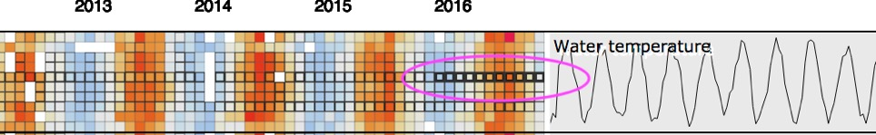
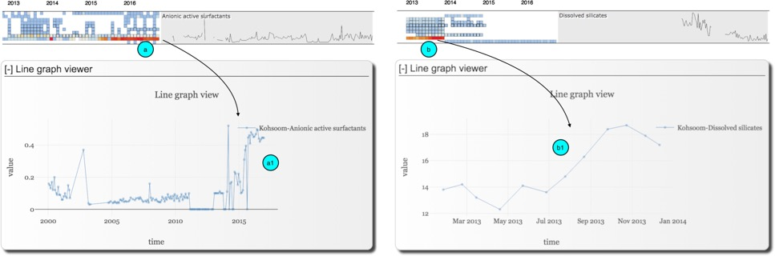
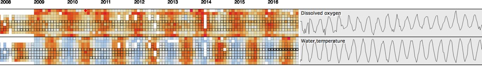
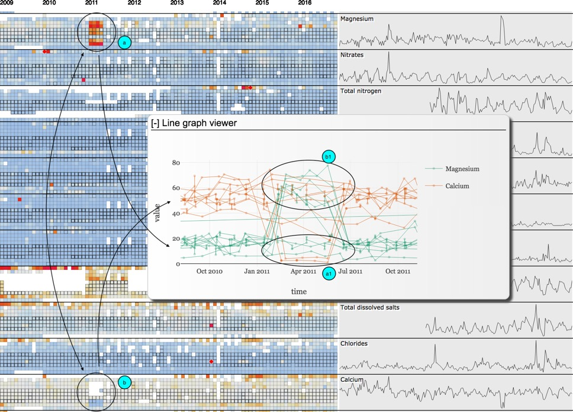
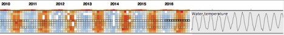

This answer
sheet should be used for your VAST Challenge 2018 Mini-Challenge 2
submission. Please maintain the .htm
format and make sure that all hyperlinks are relative to the answer form.
Rename this
form "index.htm" for your submission.
Remove these instructions and any other example text below that is
highlighted in yellow. Please see the "Submission Instructions" at http://vacommunity.org/VAST+Challenge+2018
for more detailed instructions.
Entry Name: "TTU-IDV-MC2"
VAST Challenge 2018
Mini-Challenge 2
Team
Members:
Ask Tommy
Student
Team: NO
Tools
Used:
HTML+CSS+JS
d3.js
Plotly.js
GraphLab Create
Ms.
Excel
Ms.
Word
Approximately how many hours were spent working on
this submission in total?
280
May we post your submission in the Visual Analytics
Benchmark Repository after VAST Challenge 2018 is complete? YES
Video
Provide a link to your video. Example:
http://www.westbirmingham.ac.uk/uwb-smith-mc2-video.wmv
Questions
- Characterize
the past and most recent situation
with respect to chemical contamination in the Boonsong
Lekagul waterways. Do you see any trends of
possible interest in this investigation?
Your submission for this question should contain no more than 10
images and 1000 words.
Concerned chemical
elements
According to the soil
analysis in the previous year challenge, the Methylosmoline,
Chlorodinine, and AGOC-3A are the chemical elements
of concern. Their trends highly correlated in the recent years (positively
between Methylosmoline and

Chlorodinine and negatively between AGOC-3A and the other two). This
probably due to the reason that AGOC-3A is the environmental-friendly element
and is supposed to be used in place of the other two.
As for Chlorodinine, it is dropped and remained leveling at the
end of 2015 and early 2016 (1a for its overall trend), this behavior was somewhat
consistent among all the locations and happened at the end of 2015 and early
2016, except for one extreme value in June 2016 at Kohsoom
(2a as the detail trends for all the locations).
As for Methylosmoline, its overall trends were increasing (1b),
however, it behaved differently at different locations. Its behavior could be
classified into three main groups as dropping, increasing, and rapidly
increasing to an extremely high level.
At Busarakhan,
Kannika, Sakda, and Boonsri, Methylosmoline was dropping
(2b), and behaved similarly except at Boonsri on
November 201. However, this could just be an outlier since 3 measures made on
that date and two others were quite close to the overall normal value but only
one is at very high values (2b1)
At Chai, Methylosmoline, was fluctuating but increased in 2015 and
reduced to a relatively high level in 2016.
Extremely high (Somchair, Kohsoom).
Regarding AGOC-3A,
except for the extremely high values at Boonsri on
Jan 11, 2015 (this probably due to outlier or mistake see details 1) and detail
2 , the AGOC-3A values were fluctuating but the main
trend is dropping by the end of 20067 and early 2016.
Besides the chemical
elements of concern from the previous challenge, another interesting trend was
the continuous increment of Anionic active surfactants (AS) at Kohsoom from early 2015 onward (seen from the heatmap) and
the detail views. AS are found commonly detergents or washing agents,

Another interesting
trend is the consistently high value of Sulfides in all locations in the whole
year 2008, however, there are some points to consider that all these measures
are at the same level 0.1 this would suggest some anomalies, at the same time,
many of these are measured many times in a month but still give the same value
0.1 (this may also suggest that the value is correct and consistent). This
behavior is very much the same for Atrazine in 2008, 2009 and 2010.

Another element is the
increment of Dissolved silicates at Kohsoom in early 2013,
this could explain for some construction/building activities here in that year.
One more trend is that
our visualization could clearly point out the seasonal pattern of Water temperatures,
Disolved oxygen and Oxygen saturation.

- What
anomalies do you find in the
waterway samples dataset? How do these
affect your analysis of potential problems to the environment? Is the
Hydrology Department collecting sufficient data to understand the
comprehensive situation across the Preserve? What changes would you
propose to make in the sampling approach to best understand the situation?
Your submission for this question should contain no more than 6 images and
500 words.
Provide your answer
and corresponding images here.
The
first anomalies that the visualization spots out very quickly is that the misreport of Calcium for four months from Feb
2015 to May 2015 as Magnesium in all locations (except for Achara,
Decha, Sakda, Achara) and Magnesium as Calcium in these four months from Boonsri and Kohsoom.

The second issue regarding
the data sampled is that the data collected for Atrazine is high from early of
2008 up until end of 2011 but all these are at the constant values (0.05) and
this may trigger the idea that these might not be a real increment but just
sample anomalies.

The behavior is very the
same for Sulfides but the better point at sulfide is that there are several but
a better point comparing to the previous one is that it did make several
samples (though being constant at a value for several years somewhat still
triggered doubts about the data and further investigation expected to accept
the data).

The Disolved
silicates at Kohsoom is increasing in 2013 and then
missing from thereon.
Similary, Mercury at Achara is
very high in 2010 but its value is being at 1 consantly
for the whole year.


Another interesting point to
notice is that for some time in 2016 at Chai, water temperature was sampled for
extremely many times per month.


- After
reviewing the data, do any of your findings cause particular concern for the
Pipit or other wildlife? Would you suggest any changes in the sampling
strategy to better understand the waterways situation in the Preserve?
Your submission for this question should contain no more than 6 images and
500 words.
Provide your answer and corresponding
images here.
After reviewing we found out
that AGOC-3A was supposed to be used to replace Methylosmoline
and